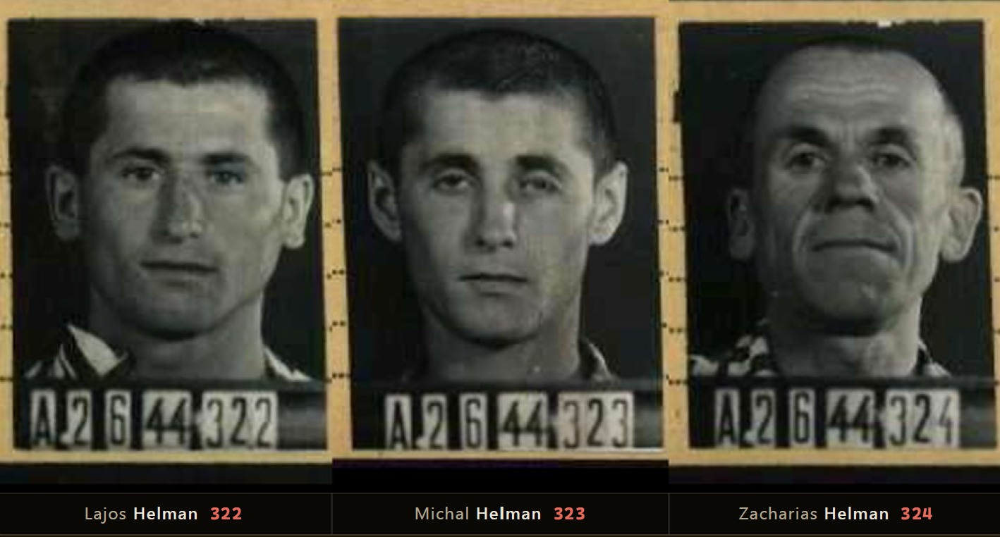
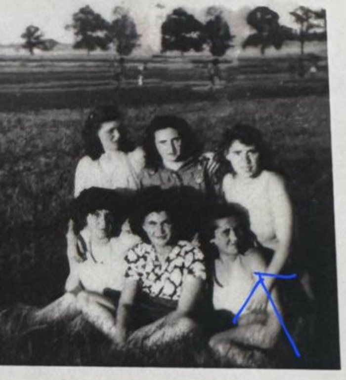
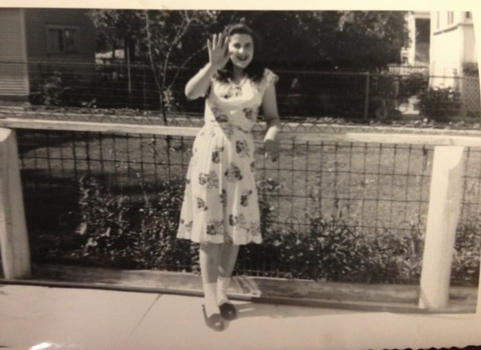
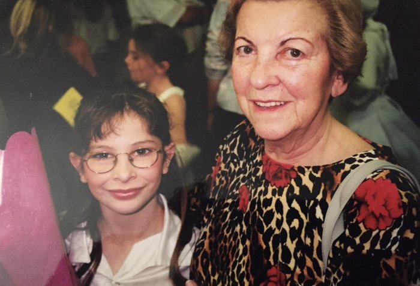

Tiszabogdány · Subcarpathia
The paperwork built to erase them is what returns their names.
A repeatable method for recovering Holocaust family histories: AI used to trace one person across a dozen fragmented, multilingual archives, and every link then checked by hand against the original document. This is the family it was built on.

Tap a face for his record
Three photographs, from three separate cards but one family, are a rare survival. Auschwitz had stopped photographing prisoners the year before, so a face exists at all only for a man pulled out for labour and sent on to a camp that still kept an identification service. These were the first images the family had ever seen of anyone on that side.
Where it started
In 2019 the family had one prisoner card and assumed that was the end of it. By 2026 it was a dossier of more than three hundred records: a village on the Tisza, a roundup, a ghetto nobody in the family had ever named, a transport, two camps, a subcamp, a death, two survivals, and a branch of the family in Israel that had been lost for eighty years.
None of it required travel. All of it required knowing where the paperwork had to put a person, and being willing to read a list nobody had a reason to finish.
An identification is admitted only where independent record types corroborate one another without contradiction, and every linkage is verified against the primary document. Where the evidence supports a probable conclusion rather than a proven one, it is stated as probable.



“We all have stories to tell. You know, all of us have some kind of story to tell.”
Helen Landó Helman · recorded testimonyRead the case · See the method